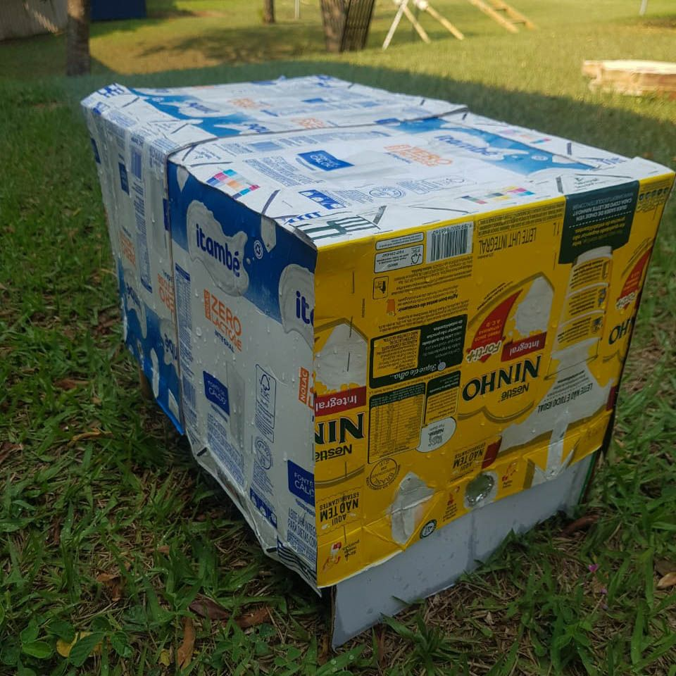
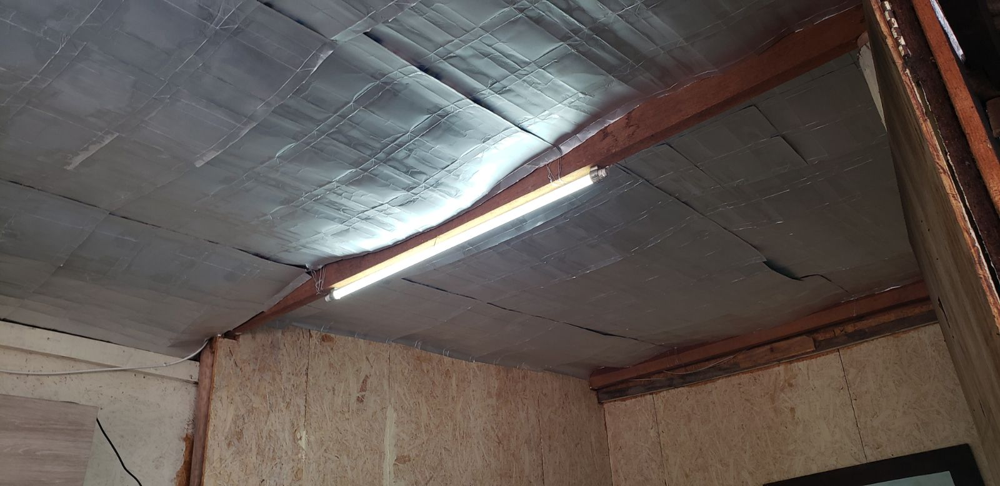

Domus
Do latim “casa”. Conforto térmico e segurança para famílias em moradias irregulares, feito com caixinhas de leite e suco.

- Comunidade
- Acampamento Capão das Antas
- Área
- Moradia sustentável
- Material
- Caixinhas de leite e suco
- Resultado
- Até 19,1 °C a menos no telhado
O problema
Casas que não protegem do calor nem do frio.
Em uma visita à comunidade Acampamento Capão das Antas, identificamos a falta de qualidade e segurança das moradias. Com pouca disponibilidade de materiais e recursos, a grande maioria das casas é construída de forma irregular.
O interior das moradias fica exposto a agentes externos e ao calor e frio extremos, tirando das famílias um mínimo de conforto em seus lares.

A solução
Placas térmicas feitas de embalagens recicladas.
O Domus promove qualidade de vida, conforto e segurança de forma simples e sustentável. Caixinhas de suco e leite são cortadas, lavadas e unidas, formando placas de revestimento térmico.
Aplicadas nos telhados e paredes, as placas reduzem em até 19,1 °C a temperatura do telhado, amenizam a infiltração da chuva e deixam o ambiente interno mais claro e agradável.

Como funciona
Da caixinha ao telhado em quatro passos.
Coletar
Caixinhas de leite e suco que iriam para o lixo são arrecadadas.
Cortar e lavar
As embalagens são abertas, cortadas e higienizadas.
Unir
As peças são unidas, formando placas de revestimento térmico.
Aplicar
As placas são instaladas em telhados e paredes das casas.
Galeria



Esse projeto terminou. O impacto continua.
Conheça os projetos ativos do time e veja como acompanhar ou apoiar o que estamos construindo agora.